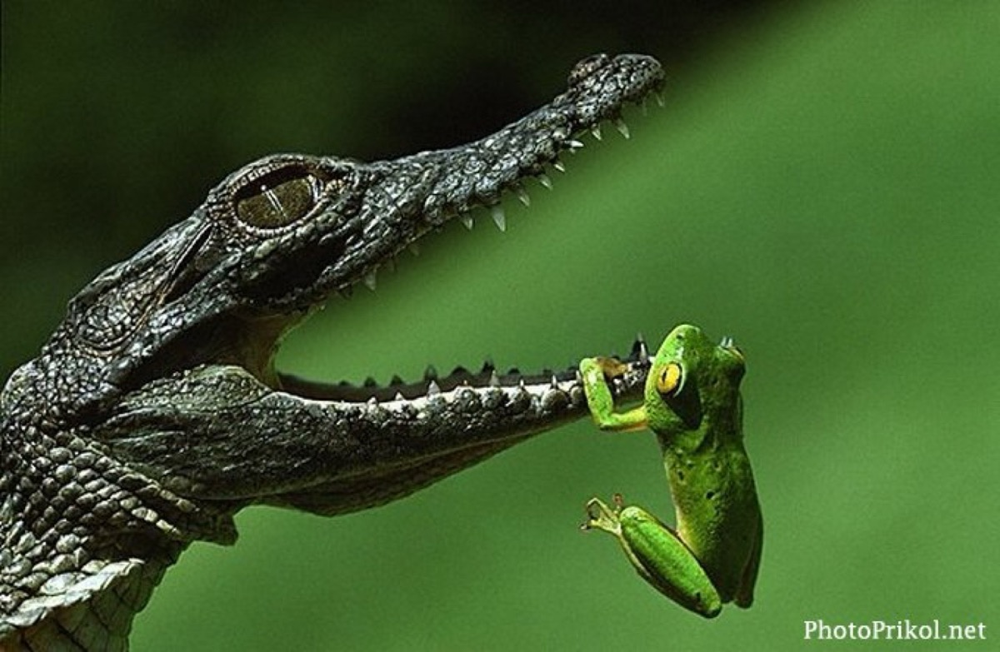

Vai măseaua
Tare-l mai durea un dinte
Și se frământa haihui
Chiar că și-a ieșit din minte
Și se-adresa oricui
Iată, aici, mă doare aici
Toată gura mă mănâncă
Am mestecat un arici
Spunea la o broască mică
Broasca cum era dentistă
Drept în gură a plonjat
O mare specialistă
Pe loc l-a și vindecat.
Și de-atuncea crocodilul
Este în apele lui
Nu mai face pe umilul
Și nu mai umblă haihui.
Vasile Groza